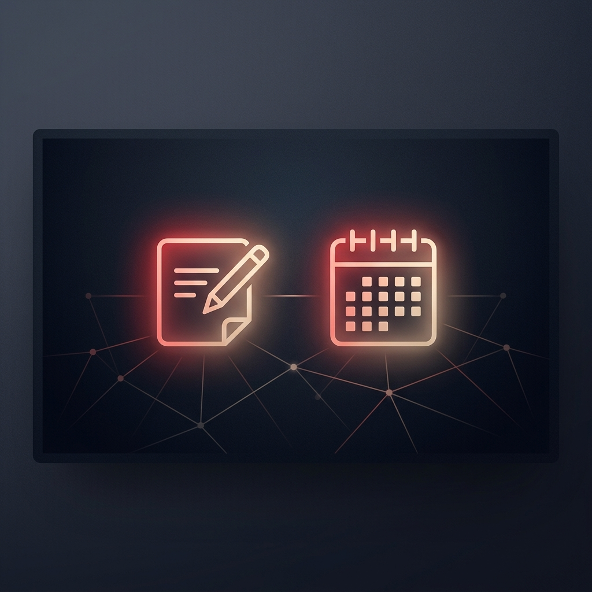

Windows üzerinde akıllı not alma, bildirim özetleme ve Google Takvim entegrasyonlu yapay zeka asistanınızı adım adım kurun.
QuickNoteApp kurulum süreci son derece basittir. Gerekli tüm adımlar otomatik olarak bir betik (script) ile tamamlanır.
QuickNoteApp-Kurulum.zip dosyasına sağ tıklayın ve "Tümünü Çıkar" diyerek masaüstünüze veya istediğiniz bir klasöre çıkartın.
QuickNoteApp-Kur.cmd dosyasına çift tıklayın.
Kurulum tamamlandı. yazısı görünecektir. Enter tuşuna basarak kapatın.
Uygulamayı ilk başlattığınızda sizi Kurulum Sihirbazı karşılar. Bu ekran, uygulamanın tüm akıllı özelliklerinin (Gemini AI, Google Takvim, Mikrofon ve Bildirimler) düzgün çalışabilmesi için gerekli olan ayarları tek pencereden denetlemenizi sağlar.
Sihirbazdaki kırmızı noktaların tamamını yeşile çevirmek, uygulamanızdan maksimum verim almanızı sağlayacaktır. Şimdi bu adımları sırayla inceleyelim.
QuickNoteApp'in Yapay Zeka ile Dikte, Not Özetleme ve Akıllı Gün Sonu Planı özellikleri resmi Google Gemini CLI aracını kullanır. Bu aracı kurmak çok basittir.
winget aracılığıyla otomatik olarak kurar ve ardından @google/gemini-cli paketini yükler.
npm install -g @google/gemini-cli@latest
gemini
Authenticated successfully! yazısını gördükten sonra terminali kapatabilirsiniz.
Hazır (v1.x.x) yazdığını göreceksiniz.
Uygulamanın günlük takviminizi sorgulaması ve notlarınızdan otomatik olarak Google Takvim'e etkinlik eklemesi için takviminizi bağlamanız gerekir.
breviai.vercel.app/api/auth/google/start aracılığıyla) açacaktır. Giriş yapmak istediğiniz Google hesabını seçin.
QuickNote Google girişi başarılı! yazılı bir sayfa görünecektir. Bu sayfa açıldıktan sonra tarayıcıyı kapatabilirsiniz.
Bağlı (eposta-adresiniz@gmail.com) olarak güncellenecektir.
%AppData%\QuickNoteApp\google-auth.json) şifreli biçimde saklanır ve kesinlikle üçüncü taraflarla paylaşılmaz. Oturum süresi dolduğunda, butonda "Yenile" yazısı çıkar; tekrar tıklayıp tarayıcıdan tek tıkla yenileyebilirsiniz.
Uygulamanın sesli not alma (dikte) ve arka planda sistem bildirimlerini (WhatsApp, Outlook) izleyip özetleme özelliklerini aktifleştirmek için Windows sistem izinlerini onaylamanız gerekir.
Soru: "QuickNoteApp-Kur.cmd" çalıştırırken hata alıyorum / yükleme yarıda kalıyor.
Çözüm: QuickNoteApp-Kur.cmd dosyasına sağ tıklayın ve "Yönetici olarak çalıştır" seçeneğini seçin. Bazı Windows sistemlerinde yetki kısıtlamalarından dolayı sertifika yüklemesi yönetici izni gerektirebilir.
Soru: Gemini CLI kurulu olduğu halde "Giriş Yapılmamış" veya "Eksik" görünüyor.
Çözüm: Gemini CLI kurulduktan sonra Windows'un ortam değişkenleri (PATH) hemen yenilenmemiş olabilir. Kurulum Sihirbazı'ndaki "Yeniden Denetle" butonuna basın ya da bilgisayarınızı yeniden başlatıp QuickNoteApp'i tekrar açın.
Soru: Google Takvim senkronizasyonunda "Giriş gerekli" hatası alıyorum.
Çözüm: İnternet bağlantınızı kontrol edin. Tarayıcıda yetkilendirme yaptıktan sonra tarayıcı sekmesini hemen kapatmayın, yönlendirmenin tamamlanmasını bekleyin. Sorun devam ederse Ayarlar penceresinden "Çıkış Yap" diyerek bağlantıyı kesip tekrar bağlamayı deneyin.